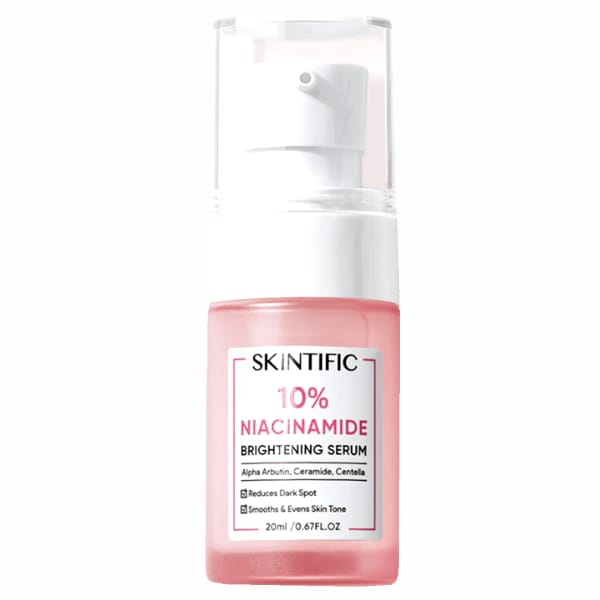

Moisturizer
PT Suntone Wisdon Indonesia, 24 oktober, 2025

SKINTIFIC Retinol Skin Renewal Moisturizer adalah pelembap malam yang mengandung retinol untuk membantu menghaluskan tekstur kulit, mengurangi minyak berlebih, dan merawat bekas jerawat. Moisturizer ini juga mengandung niacinamide, ceramide, dan hyaluronic acid untuk menjaga kelembapan kulit. Cocok untuk pemula, tetapi penggunaannya sebaiknya dimulai 2–3 kali seminggu dan wajib memakai sunscreen di pagi hari..
Serum
PT Suntone Wisdon Indonesia, 24 oktober, 2025

SKINTIFIC serum adalah produk perawatan wajah dengan kandungan aktif yang membantu mengatasi masalah kulit seperti jerawat, kusam, bekas jerawat, dan kulit kering. Serum SKINTIFIC memiliki berbagai varian, seperti niacinamide untuk mencerahkan, hyaluronic acid untuk melembapkan, dan retinol untuk membantu regenerasi kulit. Digunakan setelah mencuci wajah dan sebelum moisturizer..